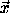
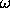
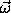
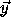

The representation of the rotational kinetic energy in terms of the inertia tensor was derived with the help of a rectangular coordinate system with basis vectors i. There was nothing special about this particular rectangular basis. So, the kinetic energy must have the same form in any rectangular coordinate system. We can use this fact to derive how the inertia tensor changes if the body or the coordinate system is rotated.
Let's talk a bit about active and passive rotations. The rotation of the vector  by the rotation R produces a new vector ' = R . We may write in terms of its components with respect to some arbitrary rectangular coordinate system with orthonormal basis vectors i: = x0 0 + x1 1 + x2 2. Let x indicate the column matrix of components x0, x1, and x2 of , and R be the matrix representation of R with respect to the same basis. In these terms the rotation can be written x' = R x. The rotation matrix R is a real orthogonal matrix.4 A rotation that carries vectors to new vectors is called an active rotation.
Alternately, we can rotate the coordinate system by rotating the basis vectors, but leave other vectors that might be represented in terms of them unchanged. If a vector is unchanged but the basis vectors are rotated, then the components of the vector on the rotated basis vectors are not the same as the components on the original basis vectors. Denote the rotated basis vectors by i' = R i. The component of a vector along a basis vector is the dot product of the vector with the basis vector. So the components of the vector along the rotated basis i' are (x')i = · i' = · (R i) = (R-1 ) · i.5 Thus the components with respect to the rotated basis elements are the same as the components of the rotated vector R-1 with respect to the original basis. In terms of components, if the vector has components x with respect to the original basis vectors i, then the components x' of the same vector with respect to the rotated basis vectors i' are x' = R-1 x, or equivalently x = R x'. A rotation that actively rotates the basis vectors, leaving other vectors unchanged, is called a passive rotation. For a passive rotation the components of a fixed vector change as if the vector was actively rotated by the inverse rotation.
With respect to the rectangular basis i the rotational kinetic energy is written
In terms of matrix representations, the kinetic energy is
where  is the column of components representing .6 If we rotate the coordinate system by the passive rotation R about the center of rotation, the new basis vectors are i' = R i. The components ' of the vector with respect to the rotated coordinate system satisfy
where R is the matrix representation of R. The kinetic energy is
However, if we had started with the basis i', we would have written the kinetic energy directly as
where the components are taken with respect to the i' basis. Comparing the two expressions, we see that
Thus the inertia matrix transforms by a similarity transformation.7
4 An orthogonal matrix R satisfies RT = R-1 and det R = 1.
5 The last equality follows from the fact that the rotation of two vectors preserves the dot product: ·  = (R) · (R), or (R-1 ) · = · (R ).
6 We take a 1-by-1 matrix as a number.
7 That the inertia tensor transforms in this manner could have been deduced from its definition (2.14). However, it seems that the argument based on the coordinate-system independence of the kinetic energy provides insight.